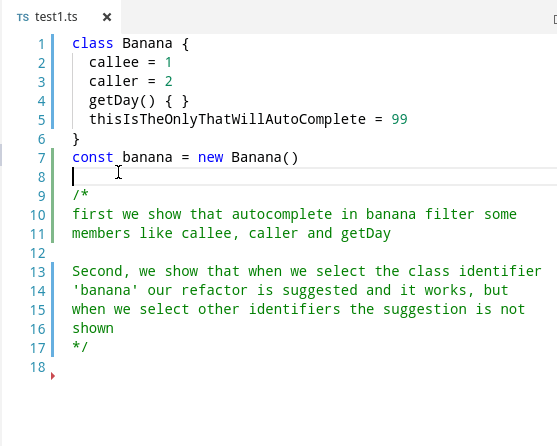

import * as ts_module from 'typescript/lib/tsserverlibrary'
function init(modules: { typescript: typeof ts_module }) {
const ts = modules.typescript
function create(info: ts_module.server.PluginCreateInfo) {This is a sample plugin that does two things, first is the same as https://github.com/Microsoft/TypeScript/wiki/Writing-a-Language-Service-Plugin this is, it removes some words from code autocompletion configured in tsconfig.json user’s file
Also it implements a refactor suggestion, that appears when user has cursor over a class or interface declaration name. It will replace that name with a fixed string - nothing useful.
Screencast:

import * as ts_module from 'typescript/lib/tsserverlibrary'
function init(modules: { typescript: typeof ts_module }) {
const ts = modules.typescript
function create(info: ts_module.server.PluginCreateInfo) {Get a list of things to remove from the completion list from the config object. If nothing was specified, we’ll just remove ‘caller’
const whatToRemove: string[] = info.config.remove || ['caller']Diagnostic logging. Use something like export TSS_LOG="-logToFile true -filepwd`/tsserver.log -level verbose” to log to a file
info.project.projectService.logger.info('I\'m getting set up now! Check the log for this message.')Set up decorator
const proxy: ts.LanguageService = Object.create(null)
for (let k of Object.keys(info.languageService) as Array<keyof ts.LanguageService>) {
const x = info.languageService[k]
proxy[k] = (...args: Array<{}>) => x!.apply(info.languageService, args)
}We will be overriding the methods we need from this proxy object, in our case getCompletionsAtPosition, getApplicableRefactors and getEditsForRefactor
Here starts our first behavior: remove some words from the autocompletion list. The words are defined in the user’s tsconfig.json file, for example:
"plugins": [{
"name": "sample-ts-plugin1",
"remove": ["caller", "callee", "getDay"]
}] proxy.getCompletionsAtPosition = (fileName, position) => {
const prior = info.languageService.getCompletionsAtPosition(fileName, position, undefined)
const oldLength = prior.entries.length
prior.entries = prior.entries.filter(e => whatToRemove.indexOf(e.name) < 0)Sample logging for diagnostic purposes
if (oldLength !== prior.entries.length) {
info.project.projectService.logger.info(`Removed ${oldLength - prior.entries.length} entries from the completion list`)
}return the prior completions without the ones that matched words that user configured in its tsconfig.json
return prior
}Here starts our second behavior: a refactor that will always be suggested no matter where is the cursor and does nothing overriding getApplicableRefactors we add our refactor metadata only if the user has the cursor on the place we desire, in our case a class or interface declaration identifier
proxy.getApplicableRefactors = (fileName, positionOrRange): ts_module.ApplicableRefactorInfo[] => {
const refactors = info.languageService.getApplicableRefactors(fileName, positionOrRange, undefined) || []
const sourceFile = info.languageService.getProgram().getSourceFile(fileName)
if (!sourceFile) {
return refactors
}Here we define the refactor metadata, the most important part is its actions name, ‘useless-rename’ which weill be used later when we define the “refactor edit” for implementing that action
const refactorInfo: ts_module.ApplicableRefactorInfo = {
name: 'useless-rename-info',
description: 'useless rename desc',
actions: [{ name: 'useless-rename', description: 'Useless Rename' }],
}
const nodeAtCursor = findChildContainingPosition(sourceFile, positionOrRangeToNumber(positionOrRange))
if (nodeAtCursor &&
nodeAtCursor.kind === ts.SyntaxKind.Identifier &&
nodeAtCursor.parent &&this refactor will appear when user has cursor over a class or interface declaration name
[ts.SyntaxKind.InterfaceDeclaration, ts.SyntaxKind.ClassDeclaration].includes(nodeAtCursor.parent.kind)
) {if so, we add our refactor definition to the current refactor list and return it
refactors.push(refactorInfo)
}
return refactors
}
proxy.getEditsForRefactor = (fileName, formatOptions, positionOrRange, refactorName, actionName, preferences) => {
const refactors = info.languageService.getEditsForRefactor(fileName, formatOptions, positionOrRange, refactorName, actionName, preferences)did the user select our refactor suggestion ?
if (actionName !== 'useless-rename') {in case we can’t find what we want we return this array, but we could return also undefined or empty array
return refactors
}
const sourceFile = info.languageService.getProgram().getSourceFile(fileName)
if (!sourceFile) {
return refactors
}
const nodeAtCursor = findChildContainingPosition(sourceFile, positionOrRangeToNumber(positionOrRange))
if ((nodeAtCursor !== undefined && nodeAtCursor.kind === ts.SyntaxKind.Identifier)) {we prefix the word Beautiful to te current identifier name
const renameTo = 'Beautiful' + (nodeAtCursor as ts.Identifier).escapedText
const range = positionOrRangeToRange(positionOrRange)
return {
edits: [{
fileName,Notice how the change is represented as an action object (not a function but a command)
textChanges: [{
span: { start: range.pos, length: range.end - range.pos }, // the segment of code that will be replaced
newText: renameTo
}],
}],
renameFilename: undefined,
renameLocation: undefined,
}
}
else {
return refactors
}
}
return proxy
}Helper functions used in this tutorial
/**normalize the parameter so we are sure is of type Range */
function positionOrRangeToRange(positionOrRange: number | ts_module.TextRange): ts_module.TextRange {
return typeof positionOrRange === 'number'
? { pos: positionOrRange, end: positionOrRange }
: positionOrRange
}
/**normalize the parameter so we are sure is of type number */
function positionOrRangeToNumber(positionOrRange: number | ts_module.TextRange): number {
return typeof positionOrRange === 'number' ?
positionOrRange :
(positionOrRange as ts_module.TextRange).pos
}
/** from given position we find the child node that contains it */
function findChildContainingPosition(sourceFile: ts.SourceFile, position: number): ts.Node | undefined {
function find(node: ts.Node): ts.Node | undefined {
if (position >= node.getStart() && position < node.getEnd()) {
return ts.forEachChild(node, find) || node
}
}
return find(sourceFile)
}
return { create }
}
export = init